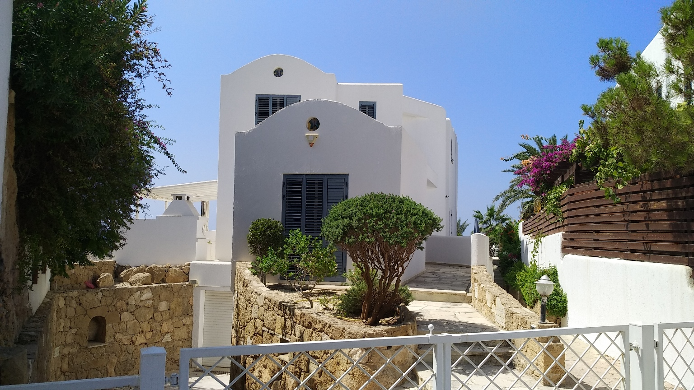
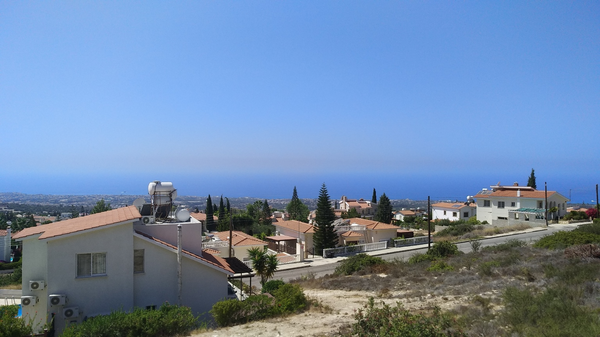

I started late, only learning to cycle at 12, finally getting my own at 13.
I instantly loved it. The freedom of travel associated with cycling was entirely new to me, and living in Cyprus, I had plenty of places wanted to go to. There are countless beautiful sights close to where I lived, whether
it be beaches, parks, quiet tourist spots, generally good spots to sit down and relax in (See Reading). Enjoy the slideshow!

Beautiful house in Tala

View from Tala, facing west
Previous
Next
Cycling has been the first, and most consistent, form of sport that I partook in.
I also enjoyed maintaining and improving my ride, making up the best part of my expenditure in my teens. Being reckless and on a small budget, I used to spend much time fixing my bike, or working to fix my bike. It was a labour of love.
Coming to Sheffield for my studies, I kept my hobby since my first year here. No photos of that I'm afraid.